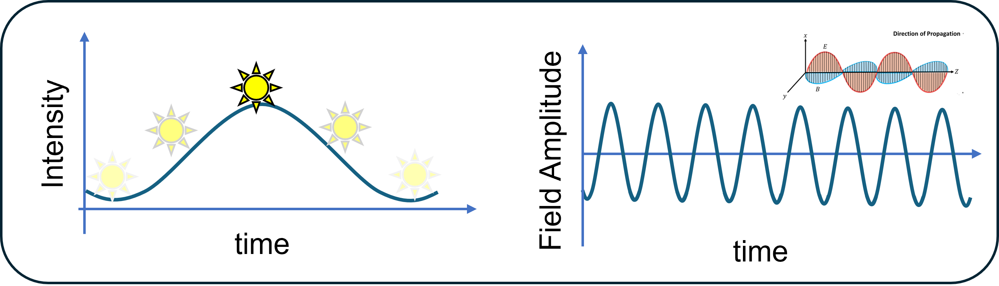
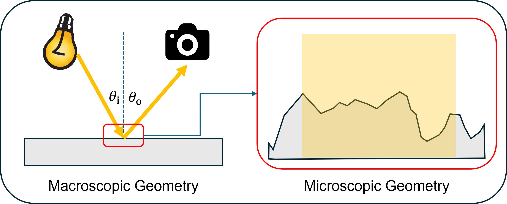

Doppler Rendering in One Weekend
Macroscopic and microscopic Doppler from first principles
Welcome to Doppler Rendering in One Weekend. The Doppler effect is the change in observed frequency caused by motion of a source, a receiver, or a scattering object. Doppler rendering simulates these measurements in scenes with complex geometry, materials, and light transport.
This tutorial starts with the familiar Doppler formula for a single reflector, then asks what changes when that reflector is a rough surface. We will distinguish intensity Doppler, measured by amplitude-modulated continuous-wave (AMCW) time-of-flight systems, from optical-field Doppler, measured by optical heterodyne detection (OHD). Following Kim et al. (2025), Section 6, we will see why the wavelength of the measured signal determines whether a measurement follows macroscopic path-length changes or microscopic material motion.
The figures introduce the geometry before the equations. Small experiments placed throughout the text let you change the relevant parameters, inspect phase contributions, and compute a rough-surface spectrum. The final chapter connects these observations to Monte Carlo rendering.
Conventions. We use radians for phase, hertz for frequency, and positive frequency shift for approach. All motion is nonrelativistic. A wavelength refers to the signal whose phase is measured: the modulation wavelength for AMCW, or the optical wavelength for OHD.
Chapter 1: Overview
1.1 What is the Doppler effect?
Imagine successive crests of a wave arriving at a receiver. If the propagation distance decreases between successive emissions, the crests arrive closer together, increasing the observed frequency. Increasing the propagation distance has the opposite effect.
For a wave propagating through a stationary medium, with source speed \(v_s\) and observer speed \(v_o\) positive when approaching one another, the classical one-dimensional relation is
Here \(c\) is the propagation speed in the medium. Equation (1) is the classical medium-based formula, appropriate for sound; it is not the exact relativistic formula for light. For velocities much smaller than the propagation speed, the first-order frequency shift takes the familiar form
For the one-way geometry above, \(v_r=v_s+v_o\). Reflection from a moving object introduces an incoming and an outgoing path segment. This gives the factor of two in the monostatic Doppler formula we will derive in Chapter 2.
1.2 Applications of the Doppler effect
Doppler measurements are useful whenever motion changes the phase of a received wave. The following examples span different wavelengths, scattering geometries, and measurement scales.
(A) Transportation and safety. Radar speed measurements use microwave Doppler shifts. Coherent automotive lidar also measures the Doppler shift of reflected light, providing velocity information in addition to range.
(B) Weather and environmental sensing. Weather radar measures motion in precipitation. Coherent Doppler wind lidar measures the motion of atmospheric scatterers and is used to study wind fields and turbulence.
(C) Industrial and structural monitoring. Laser Doppler vibrometry measures vibration of a surface. Laser Doppler anemometry measures flow, while related velocity measurements can monitor moving conveyor belts, reels, and other machinery.
(D) Medicine and biology. Doppler ultrasound measures blood-flow motion using acoustic waves. Optical techniques such as laser Doppler flowmetry and Doppler optical coherence tomography infer motion from light scattered in tissue.
(E) Space and astronomy. Spectral shifts provide information about stellar motion, orbiting planets, and spacecraft. The astronomical examples in Figure 1 also include cosmological redshift, which is associated with the expansion of space and should not be identified in general with the local, nonrelativistic Doppler formula.

1.3 Why do we need Doppler rendering?
A single-reflector formula describes a measurement dominated by one simple scattering event. A real scene can contain glossy surfaces, interreflections, occlusions, and volumes filled with moving particles. A received photon may have interacted with several objects, each with its own velocity.
These effects are relevant in non-line-of-sight imaging, scanning reflective objects, and measurements of blood or atmospheric flow. We need to account for which paths reach the receiver, how strongly they contribute, and how their phase changes. Monte Carlo light transport provides the geometric and radiometric machinery; Doppler rendering adds the appropriate temporal or spectral model.
There is also a more subtle issue. Even for a single rough plane, differentiating the depth along a camera ray need not give the Doppler shift produced by the moving surface material. Understanding this distinction is the main purpose of the following chapters.
1.4 Intensity versus optical-field Doppler
We now restrict attention to optical imaging. Two systems can illuminate the same object with infrared light but retain different kinds of phase information.
Intensity Doppler (AMCW). The source intensity is modulated, for example as \(I(t)=I_0[1+m\cos(2\pi f_m t)]\), and the receiver measures the phase or frequency of this intensity modulation. Its effective wavelength is
The light still has an optical carrier. The metre-scale wavelength in (3) describes its modulation envelope, not the electromagnetic carrier.
Optical-field Doppler (OHD). The received field \(E_s\) interferes with a coherent reference field \(E_{\mathrm{LO}}\), called the local oscillator. A square-law detector produces the interference term
This beat signal preserves the relative optical phase. At an optical wavelength \(\lambda_0=1.55~\mu\mathrm{m}\), the carrier frequency is approximately \(193~\mathrm{THz}\), but the difference frequency can be measured electronically. OHD does not require electronics that directly sample the optical oscillations.

Changing wavelength plainly changes the scale of a Doppler frequency. The more surprising consequence is that, after contributions from a rough surface are combined, it can also change which geometric motion the measurement follows.
Chapter 2: Doppler Effect for a Single Reflector
2.1 Monostatic geometry and phase evolution
Let the source and receiver be colocated. A reflector starts at range \(d_0\) and approaches at constant speed \(v\), so that \(d(t)=d_0-vt\). We ignore amplitude changes and work to first order in \(v/c\). The round-trip delay is approximately
The returned signal is a delayed copy of the source. Substituting (5) gives
After removing the source oscillation, the remaining baseband signal has phase \(\phi_{\mathrm{bb}}(t)=-4\pi d(t)/\lambda\). Its derivative is the Doppler shift:
The factor of two comes from the two path segments. An approaching reflector gives a positive shift; a receding reflector gives a negative shift. The initial range changes the phase offset, but not its slope.
More generally, a path of length \(L(t)\) contributes a relative phase \(-2\pi L(t)/\lambda\), and therefore
Both AMCW and OHD obey this phase principle. The distinction will arise when we combine the contributions of many microscopic reflectors.
2.2 Experiment: path length, phase, and frequency
Change the initial range and velocity below. The left plot shows the accumulated baseband phase change in cycles, \([\phi(t)-\phi(0)]/(2\pi)\); the right plot shows the real part of the baseband signal, including its initial phase. Switching the measured wavelength changes the time scale needed to see an oscillation.
Baseband phase change
Real baseband signal
Exercise 1. Why does changing \(d_0\) alter the sinusoid on the right without changing the slope on the left?
Show the explanation
In (6), \(d_0\) appears only in the constant phase \(-4\pi d_0/\lambda\). Differentiating with respect to time removes this term. Velocity determines the slope \(2v/\lambda\), independently of the starting range.
Chapter 3: Doppler Effect for a Rough Surface
A ray in a macroscopic renderer represents a small illuminated region, not one optically isolated point. Within that region, many microscopic heights contribute different phases to the received signal. Figure 4 makes this distinction explicit.

3.1 The static phasor sum
Let a microscopic surface point be \(\mathbf r=\mathbf x+h(\mathbf x)\mathbf n\), where \(\mathbf x\) lies in the mean plane, \(\mathbf n\) is its normal, and \(h\) is the height. Let \(\mathbf a_i\) and \(\mathbf a_s\) be unit vectors along incoming and outgoing propagation. Define the wavevector difference
Relative to the origin, the propagation phase contributed by this point is
The far-field signal is a sum of phasors over the illuminated region \(\mathcal S\). With constant amplitude for this simplified phase model,
For OHD, these are optical-field amplitudes. For AMCW, the analogous complex quantities describe the phase of intensity modulation; summing them does not imply that the optical carrier fields are coherently detected.
At a monostatic viewing angle \(\theta\), measured from the normal, the RMS height-dependent phase is
When \(\sigma_\Phi\ll1\), microscopic heights barely perturb the measured phase. When it spans many radians, different heights can contribute very different phasors. Thus “rough” is a statement about the surface relative to the wavelength, not the surface alone.
3.2 Experiment: changing the wavelength
The following experiment uses one fixed surface realization and a \(100~\mu\mathrm m\) footprint at \(\theta=45^\circ\). Change the wavelength from \(1.55~\mu\mathrm m\) to \(10~\mathrm m\) without changing the heights. Observe both the height-dependent phase scale and the directions of the phasors.
Height profile \(h(x)\)
Phasors \(e^{i\Delta\Phi(x_j)}\)
At the modulation wavelength, both the heights and this entire microscopic footprint are small relative to a cycle. At the optical wavelength, the phases vary rapidly. This is the starting point of the correspondence argument—not, by itself, a complete prediction of a Doppler spectrum.
3.3 Following a moving surface
Suppose the surface translates rigidly with velocity \(\mathbf v\). A point attached to the material moves from \(\mathbf r\) to \(\mathbf r+\mathbf vt\). The set of material points illuminated by a fixed beam also changes. We must include both effects:
Here \(\mathcal S_t\) is the illuminated region in material coordinates. It is generally not a fixed integration domain. Pulling the explicit motion term outside the integral and then treating the remaining integral as constant would miss the change of material inside the beam.
Section 6 of the OHD paper studies this sum through its temporal correlation. The resulting limiting behaviour depends on whether correlation follows individual material patches or the macroscopic illuminated region.
Chapter 4: Macroscopic and Microscopic Doppler
4.1 Microscopic correspondence: target velocity
Consider a surface that is sufficiently rough relative to the optical wavelength, with sufficiently weak correlation between distinct microscopic contributions. Terms from unrelated patches cancel in an ensemble average, while correlation remains when the same material patch is followed at two times.
Using the convention \(C_U(\tau)=\langle U(t+\tau)U^*(t)\rangle\), this attached correspondence produces a phase factor \(e^{i\mathbf q\cdot\mathbf v\tau}\). Its frequency is therefore
This is the usual scattering Doppler formula. The paper calls \(v_{\mathrm{tg}}\) the target velocity. It is a directionally weighted scalar, not the magnitude of the three-dimensional velocity vector. Microscopic correspondence does not require the camera to spatially resolve the microscopic features.
A finite beam also has boundary regions where material enters or leaves. Limited overlap and speckle decorrelation can broaden a measured spectrum. The ideal narrow target-frequency limit assumes that these effects do not dominate the correlation of the illuminated bulk.
4.2 Macroscopic correspondence: spot velocity
For metre-scale intensity modulation, micrometre heights produce negligible phase perturbations. If the footprint is also small relative to the modulation wavelength, the summed modulation phase follows the macroscopic intersection of the illumination ray and the surface.
Let the mean plane have normal \(\mathbf n\), let \(v_N=\mathbf n\cdot\mathbf v\), and let \(\theta_i\) be the incidence angle. The velocity of this fixed ray’s intersection is
The paper defines \(v_{\mathrm{sp}}=(\mathbf a_s-\mathbf a_i)\cdot\mathbf u_{\mathrm{sp}}\), the spot velocity. The spot is a geometric intersection, so it can move across the material. For a broad, uniform plane sliding tangentially, \(v_N=0\): its intersection with a fixed ray remains stationary even though the material moves.
The difference is not “path length versus Doppler.” Both results come from phase changes caused by propagation. The difference is the correspondence that survives after many microscopic contributions have been combined. Simply replacing the wavelength in the material-velocity formula does not reproduce the macroscopic limit.
4.3 Experiment: normal and transverse motion
Use a colocated source and receiver above and to the left of the plane. Let \(v_T\) be positive to the left and \(v_N\) positive upward. The unit direction toward the sensor is \(\mathbf s=(-\sin\theta,\cos\theta)\), so the two velocities reduce to
Many instruments report equivalent radial velocity, \(v_r=\lambda\Delta f/2\). These radial values are one half of the paper’s \(v_{\mathrm{tg}}\) and \(v_{\mathrm{sp}}\) in this monostatic geometry. The table below shows both conventions.
| Quantity | AMCW: spot | OHD: target |
|---|---|---|
| Paper velocity \(v_{\mathrm{sp}},v_{\mathrm{tg}}\) | ||
| Equivalent radial velocity \(v_r\) | ||
| Measured wavelength | 10 m | 1.55 μm |
| Frequency shift \(\Delta f\) |
For pure normal motion at \(45^\circ\), the spot’s equivalent radial speed is twice the target’s. For pure transverse motion at an oblique angle, the spot is stationary while the target has nonzero line-of-sight velocity. At normal incidence, both radial velocities equal \(v_N\). Motion along the beam also makes the two correspondences agree.
Exercise 2. Set \(v_N=2~\mathrm{m/s}\), \(v_T=0\), and \(\theta=45^\circ\). Predict both frequency shifts before inspecting the table.
Show the calculation
The equivalent radial velocities are \(v_{r,\mathrm{sp}}=2/\cos45^\circ=2.828~\mathrm{m/s}\) and \(v_{r,\mathrm{tg}}=2\cos45^\circ=1.414~\mathrm{m/s}\). Thus \(\Delta f_{\mathrm{sp}}\simeq0.566~\mathrm{Hz}\) at \(\lambda_m=10~\mathrm m\), whereas \(\Delta f_{\mathrm{tg}}\simeq1.825~\mathrm{MHz}\) at \(\lambda_0=1.55~\mu\mathrm m\). Comparing only the frequencies would obscure the additional geometric factor.
4.4 Experiment: a computed rough-surface spectrum
The limiting formulas do not imply a sharp threshold at a particular roughness. Figure 10 of the OHD paper varies height statistics and shows how the spectrum changes. In particular, short optical wavelength alone is not sufficient: strong spatial correlation can invalidate the approximation used to obtain target velocity.
We can examine this with a one-dimensional version of (13). Keep \(\theta=45^\circ\), \(v_N=2~\mathrm{m/s}\), \(v_T=0\), and a \(100~\mu\mathrm m\) footprint. In material coordinates \(x\), the centre of the illuminated interval moves at
For footprint width \(W\), evaluate the complex field and its finite-time power spectrum:
The taper \(w(t)\) is a Hann window. Both motion of the material and motion of the integration bounds are included. For a perfectly flat height field, the integral contributes an additional phase \(q_xat\), giving the spot frequency exactly. For suitable roughness statistics, the computed spectrum instead concentrates near the target frequency.
The initial spectrum will be computed when this figure comes into view.
Target-frequency limit Spot-frequency limit Computed power
Things to try. Start with the smooth preset and locate the spot-frequency peak. Restore the rough surface and compare its peak with the target marker. Then increase the correlation length while keeping RMS height fixed. The phases become more spatially correlated; both the spectral shape and return power can change. These results should not be interpreted as a universal interpolation between two velocities.
Numerical implementation of the moving footprint
The integrand is time independent in material coordinates. Precompute its cumulative trapezoidal integral, then evaluate it at the two moving endpoints. This is the same quadrature as summing the aperture at every time step, with much less repeated work.
q = (2 * pi / wavelength) * (a_out - a_in);
F = cumulativeIntegral(exp(i * (q.x * x + q.y * height(x))));
for (n = 0; n < timeSamples; ++n) {
t = n * duration / timeSamples;
aperture = F(a * t + width/2) - F(a * t - width/2);
U[n] = aperture * exp(i * 2*pi * targetFrequency * t) / width;
}
power = abs(FFT(hann * U) / sum(hann))^2;
// Average powers, not complex fields, across surface realizations.Chapter 5: Implications for Doppler Rendering
The distinction changes what a renderer must track. A macroscopic ray intersection is generally detached from the moving material, whereas the rough-surface optical limit uses correspondence attached to that material.
5.1 AMCW: macroscopic path evolution
For AMCW Doppler, evaluate the intensity-modulation phase using macroscopic path lengths as the scene moves. This requires time-dependent intersections, visibility, and transport weights, or an estimator that correctly accounts for their evolution. The surface point reached by a fixed ray at a later time need not be the same material point.
A uniform treadmill is a useful test: if its mean surface geometry and reflectance remain unchanged, translating its material alone does not produce the spot-frequency shift of a changing range. Texture, edges, or deformation can introduce additional temporal modulation and lie outside that idealized test.
5.2 OHD: material velocity along a path
Under the rough-surface statistical assumptions, a geometry snapshot with material velocities at scattering events can predict the mean Doppler spectrum. For a path with vertices \(\mathbf x_0,\ldots,\mathbf x_N\), unit segment directions \(\mathbf e_j\), and attached velocities \(\mathbf v_j\),
At an internal scattering event, this becomes \((\mathbf e_{\mathrm{out}}-\mathbf e_{\mathrm{in}})\cdot\mathbf v/\lambda_0\). Sum the frequency changes along the path and accumulate its radiometric weight in the appropriate spectral bin. Speckle statistics and finite observation time require additional treatment, as discussed in Sections 4–5 of the OHD paper.
| Intensity Doppler (AMCW) | Optical-field Doppler (rough-surface OHD) | |
|---|---|---|
| Phase wavelength | Modulation; e.g. 10 m | Optical field; e.g. 1.55 μm |
| Correspondence | Macroscopic illuminated region | Moving microscopic material |
| Velocity in the phase law | Spot velocity | Target velocity |
| Uniform tangentially moving plane | No macroscopic range change | Doppler if material motion has a line-of-sight component |
| Rendering strategy | Evolving geometry and modulation paths | Material velocities and a statistical optical spectrum |
The common starting point is the propagation phase. The large wavelength disparity makes the same microgeometry nearly invisible to intensity-modulation phase but significant to optical-field phase. Its spatial correlations then determine which temporal correspondence survives. This is why the two measurements can disagree even though they observe the same moving object.
References and Further Reading
- J. Kim, C. Benko, M. Wrenninge, R. Villemin, Z. Barber, W. Jarosz, and A. Pediredla. A Monte Carlo Rendering Framework for Simulating Optical Heterodyne Detection. ACM Transactions on Graphics, SIGGRAPH 2025. Section 6, especially Eqs. (43)–(55), Figures 8–10, and Table 1. Project page.
- Doppler Time-of-Flight Rendering. SIGGRAPH Asia 2023. Project page.
- J. Kim. Doppler Rendering in One Weekend. Original tutorial and source of the introductory figures.
- Walk on Spheres in One Weekend. Reference for the chapter-based tutorial presentation, in-text experiments, and exercises.